전자기기기능장 (2005-04-03 기출문제)
1과목: 임의구분
1. 그림과 같은 회로에서 부하 임피던스 Z를 얼마로 할 때 부하에 최대 전력이 공급되는가?
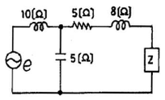
- 5+j2
- 5-j2
- 5+j8
- 5-j8
(정답률: 82%)

2. CPU의 동작속도를 결정하는데 가장 큰 영향을 미치는 것은?
- 어드레스 버스의 길이
- 명령의 구성형식 및 종류
- CPU의 클럭 주파수
- 기억장치와 제어장치
(정답률: 92%)
3. VTR 헤드의 클리닝 방법으로 가장 옳지 않은 것은?
- 전용의 클리닝 테이프를 사용한다.
- 다이프론, 솔벤트 나프사 등을 캐라코와 같은 천에 스며들게 하여 닦아 낸다.
- 문지르는 방향은 헤드 회전 방향과 직각방향으로 한다.
- 헤드에 이물질이 응고되어 있으면 손가락 끝으로 다소 힘을 가하여 문지른다.
(정답률: 92%)
4. 푸시풀(push-pull)B급 Tr 전력 증폭기에 사용되는 Tr의 컬렉터 손실(Pc)은 희망 최대 출력의 몇 배 이상이어야 하는가?
- 2배
- 1/2배
- 5배
- 1/5배
(정답률: 98%)
5. 저항 4[Ω], 유도 리액턴스 3[Ω]이 직렬일 때 5[A]의 전류가 흐른다면 이 회로에 가한 전압은?
- 15[V]
- 20[V]
- 25[V]
- 35[V]
(정답률: 85%)
6. 반가산기에서 자리 올림 신호(Co)의 논리식은?
- A + B
- A ⋅ B
- A⊕B
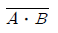
(정답률: 87%)
7. 마이크의 감도(sensitivity)를 말할 때 0[dB]는 개방단 전압이 얼마인 때인가?
- 1 [mV]
- 1 [μA]
- 1 [V]
- 0.775 [V]
(정답률: 73%)
8. T 플립-플롭을 사용하여 8분주 회로를 만들 때 최소 몇 개가 필요한가?
- 2개
- 3개
- 4개
- 5개
(정답률: 95%)
9. N형 반도체를 만들기 위해 사용하는 불순물이 아닌 것은?
- P
- As
- B
- Sb
(정답률: 85%)
10. COLOR TV에서 흑백 방송은 정상으로 수상되지만 COLOR 방송을 수상했을 때는 색이 전혀 나타나지 않을 경우의 고장은?
- Y신호 증폭 회로
- 대역 증폭 회로
- 매트릭스 회로
- 컨버전스 회로
(정답률: 91%)
11. 라운드니스 컨트롤 회로의 특성을 가장 올바르게 설명한 것은?
- 저역 특성만을 올려주기 위한 회로이다.
- 고역 특성만을 올려주기 위한 회로이다.
- 저역과 고역 특성을 올려주기 위한 회로이다.
- 중역 특성을 올려주기 위한 회로이다.
(정답률: 87%)
12. ISDN(Integrated Service Digital Network)란?
- 직접 호출방식이다.
- 종합 호출 통신망이다.
- 종합 정보 통신망이다.
- 개별 호출 통신망이다.
(정답률: 88%)
13. 디지털 신호에서 표본화정리(샘플링주파수)로 원신호를 재생할 수 있는 식은? (여기서 fS는 샘플링주파수, f0는 원신호주파수이다.)
- fS ≤ 1/2f0
- fS ≥ 1/2f0
- fS ≤ 2f0
- fS ≥ 2f0
(정답률: 78%)
14. 제어계의 출력신호와 입력신호와의 비를 무엇이라 하는가?
- 미분함수
- 적분함수
- 제어함수
- 전달함수
(정답률: 98%)
15. 아래의 논리식을 간략화 하면?
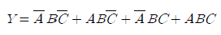
- Y = A
- Y = B
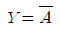
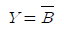
(정답률: 81%)
16. PM 방식의 원리 설명으로 FM 변조기 앞에 어떤 회로를 삽입하면 PM파를 얻을 수 있는가?
- 적분회로
- 미분회로
- 위상 변조기
- 평형 변조기
(정답률: 82%)
17. 같은 보빈위에 동일한 권수로 인덕턴스 L[H]의 코일 2개를 접근해서 감고 이것을 직렬로 접속했을 때 합성 인덕턴스는? (단, 결합계수는 0.8로 한다.)
- 0.4L[H]
- 2L[H]
- 3.6L[H]
- 4L[H]
(정답률: 89%)
18. 저주파 증폭기에서 다루는 측정 내용과 가장 관계없는 것은?
- 주파수 특성
- 위상 특성
- 의율 특성
- 변조 특성
(정답률: 72%)
19. 모뎀(Modem)이란?
- 위성통신 변조기
- 지구국 복조기
- 무선항로 표시기
- 데이터통신 변Χ복조기
(정답률: 95%)
20. 슈퍼헤테로다인 수신기에 고주파 증폭 회로를 부가하면?
- 감도가 나빠진다.
- 선택도가 좋아진다.
- 영상신호 방해가 증가한다.
- 신호대 잡음비가 낮아진다.
(정답률: 91%)
2과목: 임의구분
21. 입력 신호 없이 펄스(pulse) 출력을 만드는 회로는?
- 비안정 멀티바이브레이터
- 쌍안정 멀티바이브레이터
- 단안정 멀티바이브레이터
- 플립-플롭(Flip-Flop) 회로
(정답률: 69%)
22. 역율이 0.001인 콘덴서 Q의 값은?
- 100
- 1000
- 1
- 10
(정답률: 94%)
23. 마이크로컴퓨터에서 인터럽트를 이용하여 데이터의 입ㆍ출력을 행할 경우 데이터 하나하나에 대해 CPU가 제어하기 때문에 고속처리를 할 때는 비효율적이다. 이 문제를 해결하기 위해 CPU를 통하지 않고 입ㆍ출력장치와 메모리 사이에서 데이터를 주고받는 방식을 무엇이라고 하는가?
- CTC
- PIPO
- DMA
- NMI
(정답률: 98%)
24. 녹음기에서 테이프를 일정한 속도로 움직이게 하는 것은?
- 캡스턴과 핀치롤러
- 핀치롤러와 텐션암
- 캡스턴과 테이프 가이드
- 테이프 가이드와 테이프 패드
(정답률: 88%)
25. 아래의 논리회로와 등가인 논리회로는?
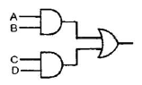
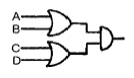
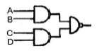
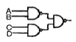
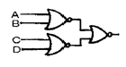
(정답률: 87%)
26. 순차처리만 가능한 보조기억장치는?
- 자기디스크
- 자기드럼
- 자기테이프
- 플로피디스크
(정답률: 88%)
27. 정류 회로의 직류 전압이 300[V]이고, 리플 전압이 3[V]이었다. 이 회로의 리플 함유율은?
- 1[%]
- 2[%]
- 3[%]
- 10[%]
(정답률: 88%)
28. 마이크로프로세서와 메모리 혹은 인터페이스 장치간의 정보를 교환하는 통로로서 양쪽 방향 모두 정보전달이 가능한 것은?
- 어드레스 버스
- 데이터 버스
- I/O 버스
- 모뎀
(정답률: 85%)
29. 16개의 address을 가진 processor를 이용한 장비에서 직접적으로 addressing을 할 수 있는 address 수는 몇 개인가?
- 65,536
- 65,535
- 256
- 255
(정답률: 100%)
30. 자동제어에서 제어량의 종류가 아닌 것은?
- 압력
- 속도
- 시간
- 주파수
(정답률: 79%)
31. 아래의 동기 카운터는 몇 진으로 동작하는가?
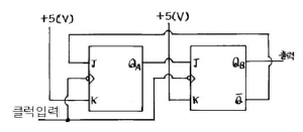
- 2진
- 3진
- 4진
- 5진
(정답률: 91%)
32. 순서 논리 회로(sequential logic circuit)의 구성을 나타낸 것은?
- 감산 회로와 논리곱 회로
- 가산 회로와 논리합 회로
- 조합 회로와 논리 소자
- 조합 회로와 기억 소자
(정답률: 91%)
33. 공진 회로에 대한 설명 중 옳은 것은?
- R-L-C 직렬공진회로에서 전류는 전압보다 위상이 늦다.
- R-L-C 직렬공진회로에서 전압확대비 Q는 R/wL 이다.
- R-L-C 병렬공진회로의 임피던스(Impedance)는 최대가 된다.
- R-L-C 병렬공진회로에는 최대의 전류가 흐른다.
(정답률: 73%)
34. 서브루틴(subroutine)호출시 복귀 주소를 저장하는 곳은?
- ROM
- pointer
- stack
- program counter
(정답률: 90%)
35. 다음 그림과 같은 회로에서 AB 단자에 V=Vm sinwt[V]를 공급했을 때, AC 양단의 전압은?
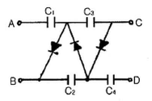
- 2Vm
- 3Vm
- 4Vm
- 5Vm
(정답률: 98%)
36. 마이크로컴퓨터(microcomputer) 명령의 분류에 포함되지 않는 것은?
- 전송 명령
- 연산 명령
- 제어 명령
- 승산 명령
(정답률: 88%)
37. 입출력 장치와 주기억 장치를 연결하는 중개 역할을 하는 것은?
- Bus
- Buffer
- Channel
- Device
(정답률: 83%)
38. fα=2[MHz]인 Tr를 이미터 접지로 사용한 경우 β 차단 주파수 fβ는? (단, hfb=0.98)
- 10 [kHz]
- 20 [kHz]
- 30 [kHz]
- 40 [kHz]
(정답률: 63%)
39. 10진수 5에 대한 3초과 코드로 올바른 것은?
- 1010
- 0001
- 1000
- 0101
(정답률: 91%)
40. 시미트 트리거(Schmitt trigger) 회로의 응용 회로가 아닌 것은?
- 전압 비교회로
- D-A 변환회로
- 쌍안정회로
- A-D 변환회로
(정답률: 92%)
3과목: 임의구분
41. VU 미터의 설명으로 옳지 않은 것은?
- 음량계이다.
- 단위로는 데시벨을 사용한다.
- 음향기기의 음성 전압의 크기를 감시한다.
- 일종의 정류형 전압계이다.
(정답률: 56%)
42. 그림에서 스위치(S.W)를 닫을 때의 충전전류 i(t)[A]는?
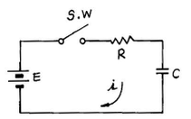
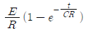
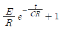
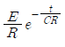
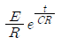
(정답률: 86%)
43. 고출력의 연속망을 얻을 수 있고, 주로 전기 방전에 의하여 펌핑이 행해지는 LASER는?
- 고체
- 액체
- 기체
- 반도체
(정답률: 92%)
44. 그림의 회로에서 교류전압 110[V]를 인가하였을 때 전류[I]는?
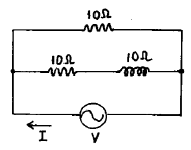
- 3+j11
- 3-j11
- 1.5+j5.5
- 16.5-j5.5
(정답률: 91%)
45. 다음은 흑백 TV CRT 회로의 일부이다. 이 회로에서 C와 R의 작용으로 적당한 것은?
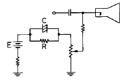
- 휘도 조정회로
- 포커스 회로
- 귀선 소거회로
- 스포트 킬러회로
(정답률: 77%)
46. AM 수신기의 감도를 높이기 위하여 고주파 증폭을 크게 하면 발진이 일어난다. 발진을 방지하기 위한 방법은?
- 저주파 증폭을 크게 한다.
- 저주파 증폭을 작게 한다.
- 수신 주파수를 영상 주파수로 바꾸어 증폭한다.
- 수신 주파수를 중간 주파수로 바꾸어 증폭한다.
(정답률: 92%)
47. 인가전압에 따라 용량이 변화하는 성질을 갖는 반도체는?
- 쇼트키 다이오드
- 포토 다이오드
- 터널 다이오드
- 바랙터 다이오드
(정답률: 89%)
48. 콘(Cone)형 스피커의 저음 특성을 향상시키기 위한 설명 중 가장 적합한 것은?
- 임피던스가 커야 한다.
- 진동계의 스티프니스(stiffness)를 작게 하고, 진동판의 실효 중량을 크게 한다.
- 진동판의 두께를 증가시키고, 보이스 코일을 굵게 한다.
- 구경을 작게 하고, 콘에 코루게이션(corrugation)을 많이 넣는다.
(정답률: 95%)
49. 직류 전동기의 종류에 해당되지 않는 것은?
- 유도 전동기
- 직권 전동기
- 분권 전동기
- 복권 전동기
(정답률: 98%)
50. 초음파의 응집 작용을 이용한 것이 아닌 것은?
- 초음파 집진기
- 기름이나 타르의 탈수
- 공장에서 나온 폐수의 처리
- 화장품 제조
(정답률: 89%)
51. JK 플립플롭에서 J=K=1이고, 클럭 펄스가 가해진 뒤의 출력 상태는? (단, 클럭 펄스가 가해지기 전의 상태를 Q라고 한다.)
- 0
- 1
- Q
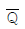
(정답률: 91%)
52. 게이트에 역 바이어스를 가하여 전도 상태로부터 차단 상태로 턴-오프 시킬 수 있도록 하는 사이리스터는?
- UJT
- SUS
- GTO
- SCS
(정답률: 80%)
53. 다음 검파 방식 중에서 진폭 제한기가 필요 없고, 왜율이 가장 낮은 방식은?
- 비검파 방식
- 슬로프 검파 방식
- 게이터드 검파 방식
- 포스터실리 검파 방식
(정답률: 72%)
54. 아래의 논리 회로를 논리 식으로 표시하면?
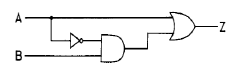
- Z=A+B
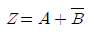
- Z=A+AB
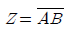
(정답률: 76%)
55. 원재료가 제품화 되어가는 과정 즉 가공, 검사, 운반, 지연, 저장에 관한 정보를 수집하여 분석하고 검토를 행하는 것은?
- 사무공정 분석표
- 작업자공정 분석표
- 제품공정 분석표
- 연합작업 분석표
(정답률: 83%)
56. 파레토그림에 대한 설명으로 가장 거리가 먼 내용은?
- 부적합품(불량), 클레임 등의 손실금액이나 퍼센트를 그 원인별, 상황별로 취해 그림의 왼쪽에서부터 오른쪽으로 비중이 작은 항목부터 큰 항목 순서로 나열한 그림이다.
- 현재의 중요 문제점을 객관적으로 발견할 수 있으므로 관리방침을 수립할 수 있다.
- 도수분포의 응용수법으로 중요한 문제점을 찾아내는 것으로서 현장에서 널리 사용된다.
- 파레토그림에서 나타난 1∼2개 부적합품(불량) 항목만 없애면 부적합품(불량)률은 크게 감소된다.
(정답률: 75%)
57. 다음 중 검사를 판정의 대상에 의한 분류가 아닌 것은?
- 관리 샘플링검사
- 로트별 샘플링검사
- 전수검사
- 출하검사
(정답률: 82%)
58. 다음 내용은 설비보전조직에 대한 설명이다. 어떤 조직의 형태인가?
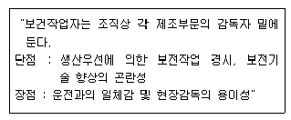
- 집중보전
- 지역보전
- 부문보전
- 절충보전
(정답률: 82%)
59. nP관리도에서 시료군마다 n=100 이고, 시료군의 수가 k=20이며, ΣnP=77이다. 이때 nP관리도의 관리상한선 UCL을 구하면 얼마인가?
- UCL = 8.94
- UCL = 3.85
- UCL = 5.77
- UCL = 9.62
(정답률: 67%)
60. 수요예측 방법의 하나인 시계열분석에서 시계열적 변동에 해당되지 않는 것은?
- 추세변동
- 순환변동
- 계절변동
- 판매변동
(정답률: 82%)